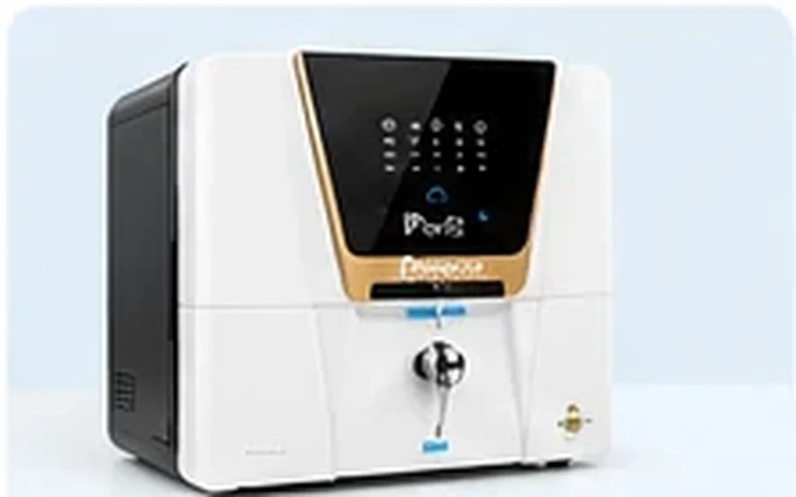
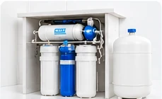

Domestic Water Purifier
Ask us about home RO purifier options, features and current prices.
RO Purifiers, Commercial Plants & Spare Parts

Ask us about home RO purifier options, features and current prices.
Space-saving water purification options for modern kitchens.

Commercial water purification solutions for business requirements.

Ask about filters, membranes, pumps and compatible components.

Contact us for availability from Aquaguard, Purit, Livpure, Kent and Havells.